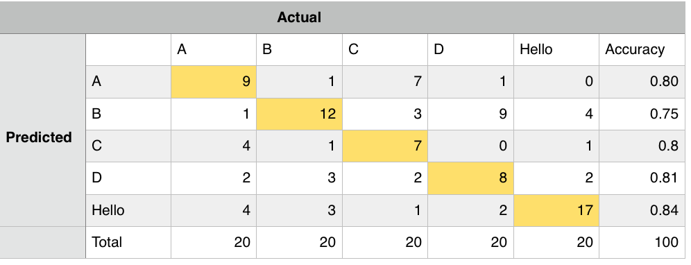

Problem Definition
The problem at hand is using computer vision algorithms and deep learning to recongize gestures in frames from our camera. The difficulties we expected included creating a model that could be recognized by a number of different gestures with fairly high accuracy, having a background that would minimize the noise the camera would pick up, and having templates that would be correctly matched to our gestures.
Method and Implementation
Give a concise description of the implemented method. For example, you might
describe the motivation of your idea, the algorithmic steps of your methods, or
the mathematical formulation of your method.
Include a description of your system, including:
- Identify your problem: How many types of gestures can your system identify? What are these gestures?
- Our system can detect 3 static gestures and 1 dyanmic gesture in the American Sign Langauge alphabet. This includes the letters 'A', 'B', 'C', 'D' and the word 'hello', which is simply a wave :)
- Details of your system design. How do you pre-process your image?
- There were several steps and methods we had to take in order to preprocess current image frame. Our first step in preprocessing was to detect our hand apart from our face and any other objects within the screen that was similar to our skin tone
- Initially, we tried to use background differencing to detect our hand, but it only worked when our hand was in motion. If we failed to move our hand consistently it would be counted as the background.
- We ultimately went with skin detection, using frame differencing as our input, which would detect our face and hand based on skin tone. The issue now becomes how to only differentiate the hand from the face. To do this, we used opencv's findContour function, which returns a list of points of all contours in frame. We took this contour list and sorted it from largest to smallest by contour area, since we know that face & hand will be the larger of the contours, and we take the first two of that sorted list. Then we used opencv's approxPolyDP to detect the curves in those 2 largest contours. A circular polygon would have 8 points/curves so once we came across an approximation of length 8, we assumed this wass the face contour and disregard it from the list, leaving us with only the hand contour
- After detecting the shape/contour of the hand, we made use of opencv's boundingRect function which calculates rectangular points given a list of contour points. Thus, this gives us the bounding box of the hand and we drew it onto the current frame
- What are the steps of gesture recognition after pre-processing?
- After detecting a bounding box for the hand, we have a region of interest that we can work with, which cuts down on run time since we can focus on a specific area. The next step is recongizing the gesture within this region. First, we passed in the region to the motion energy function which accumulates frame differences over a time period. Then, we had pre-defined templates which allowed us to compare the gestures with. Finally, we took the ratio output from the motion energy function and comapared it to a certain threshold. If the gesture's ratio was above the threshold it would be printed on the sreen.
- How do you post-process the recognition results?
- Once a gesture is recongized, it's noted in our confusion matrix that we're simply computing manually by hand. Because the hand is recongized via skin detection, the bounding box continues to frame the hand until its out of frame. The gestures inside the bounding box continue to be recongized in our system.
Briefly outline the functions you created in your code to carry out the algorithmic steps you described earlier.
- mySkinDetect(curr_frame, curr_frame_base) - This took in the current frame (with the printed output/accuracy) and the base of it (our video stream). It would detect our skin color based ont the rgb values fed in from the base frame and convert the frame to black in white. Thus, all the pixels the function detected as our skin color were converted to white and everything else to black. Then, it would recognize the threshold of our hand (or all the pixels that were converted to white) and detect the contours of it. After getting the contours of our hand, it would then draw a bounding box around it, via opencv's bounding box function and outputs our region of interest which we will use to detect our gestures.
- myMotionEnergy(mh) - This function would detect our hand movement depending on the difference between the black backgound and the white hand we created in myMotionHistory which sums over the frame differencing.
- myFrameDifferencing(prev, curr) - This would differentiate between the previous frame and the current frame, picking out different pixels that would be our motion.
- match_gesture(frame, frameDest, mySkin, templates_dict, template_objs) - This function would essentially match our pre-defined gestures to our current frame. It did so by making use of the opencv funtion cv.matchTemplate(mySkin,template,cv2.TM_SQDIFF_NORMED) - which takes our current "hand" and our template and take the square difference between them. It also would calculate the accuracy of the squared difference and choose the highest one and output it on our screen.
- Below are one example of the templates we used to match for the 5 gestures. We used about 8-10 for each gesture, so around 50 templates total. These templates were simply screenshotted from the skin detection thresholded frame since that's the frame the templateMatch function is matching against.
Experiments
Describe your experiments, including the number of tests that you performed, and the relevant parameter values.
-
For our experiments, we ran several trials using different gestures - such as our ASL letters and words (we used no and love as previous test cases before settling on hello).
We underwent countless of tests and found several errors. Below is a confusion matrix showcasing our program's ability to compute the actual gesture.

Define your evaluation
metrics, e.g., detection rates, accuracy, running time.
Our metrics were simply how many times it guessed a certain gesture. In addition, our running time is relatively expensive as we have to do an exhaustive search for each template
against the current frame. We played arround with our accuracy threshold, which decides if a gesture's
template matching accuracy is high enough to consider it that gesture and display it on the frame. We initially had it at 0.8, meaning
if the highest template matching accuracy is greater than that, we can display it. however, we found this to be a little to high for our system
and in an ideal enviroment with perfect lighting that mightve worked, but we set it to 0.6 for testing purposes.
Results
Discussion
Discuss your method and results:
- What are the strengths and weaknesses of your method?
- One of the weaknesses in the implementation used is that it's very computationally expensive. Each frame is thresholded and summed up with nested for loops inside a larger while loop to calcuate frame differencing and motion history. Additionally, template matching uses up to 10 templates for each gesture, and in each template match, an exhaustive search is computed, which adds to the run time and giving the video stream a bit of a lag
- Another weakness in the implementation could also be user bias. Because we were both of fair colored skin tone, we had it detect our higher range of skin tone. If someone testing our code happened to have a darker skin tone, the program may not recognize their hand.
- Do your results show that your method is generally successful or are there limitations? Describe what you expected to find in your experiments, and how that differed or was confirmed by your results.
- There were a lot of limitations in the system. Firstly, it was only designed to recongize 5 total gestures, anything outside those ranges are falsly detected as one of the 5 gestures. This could be improved upon if we provded more templates for more gestures. Secondly, the system detects the hand through skin detection. This is not the most efficient approach as we assume the user's head will also be inside the frame, thus while I used area detection to differenciate between a head and a hand, the skin contours are very sensitive, a some hair in your face might make the bounding box switch to your face instead of your hand. Another approach would have been to use background differencing to sum over x amount of frames to initialize a background, then put the hand in and threshold that to get the bounding box for the hand, however this would assume the user has to stay completely still
-
Overall, the system is generally successfull if it's under the correct conditions. The optimal conditions include:
- Good clear lighting with minimal shadows
- A clean background free of colors similar to skin tones
- No hair or hats on face so the system can detect a round shape
- Potential future work. How could your method be improved? What would you try (if you had more time) to overcome the failures/limitations of your work?
- Many things could be improved with the gesture accuracy. Even though it would detect gestures correctly, it was not always correct and if the lighting was very bad (or if there was a lot of noise in the background) the accuracy could be way off. If we were allowed to our own region of interest to insert our hand into and then track it from there, the results would have been even better. Also it would have reduced the computational cost on our program.
- Addionally, we were using OpenCV's templateMatch function, which only gave a strong match if the template matched EXACTLY with the target obj in the current frame size wise. Meaning, our hand need to be the exact size in the current frame as the template. This could've been improved if we utilized multis-scale template matching, where we resized the template with respect to the size of our hand so we could get a better accuracy rate. This is something we could've implemented and looked into if we had more time and would greatly improve the accuracy rates
- Another thing we would've liked to incorporate is a neural network or hidden markov models to train the system to learn to detect the gestures, this would reduce the need for so many templates and factor out the need for template matching which would improve run time
Conclusions
Based on your discussion, what are your conclusions? What is your main message?
- There are a lot of components and factors to consider when dealing with computer vision recognition techniques, especially building an efficent and accurate real time detection system. Computer vision is incredible in how far it has advanced, but there are still many problems to address in coding with it since we must either be very accurate with the template or risk allowing the program to be too liberal in differentiating gestures. In addition, it is not as easy to incorporate a code that is completely racially unbiased since different races/people have different skin tones. In order to account for all these issues, programmers should be both diverse and must account for all situations to develop a good detection program.
Credits and Bibliography
Cite any papers or other references you consulted while developing your solution. Citations to papers should include the authors, the year of publication, the title of the work, and the publication information (e.g., book name and publisher; conference proceedings and location; journal name, volume and pages; technical report and institution).
- Used source code from Lab 7
- Week 8 and 9 CS 411 Lecture notes
- http://www.cs.bu.edu/fac/betke/cs440/restricted/lectures/kids-room-spring-2019.pdf The KidsRoom Room: A Perceptually-Based Interactive and Immersive Story Environment, MIT Media Lab
Material on the web should include the url and date of access.
- Examples from OpenCv documentation (https://docs.opencv.org), 3/28-4/3
Credit any joint work or discussions with your classmates.
- Collaborated with partner Tim Choe!